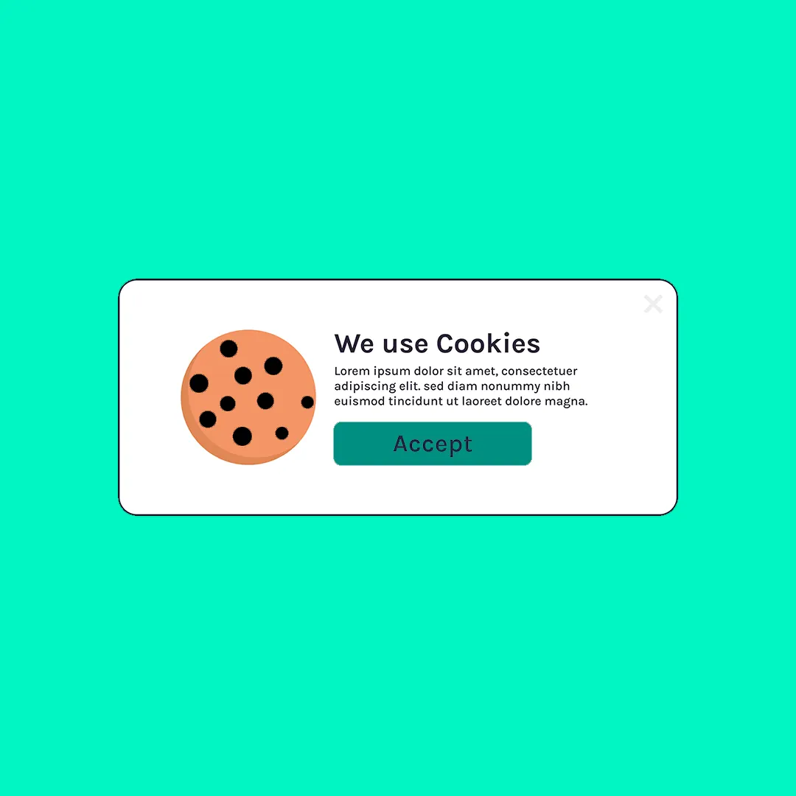

A privacidade de dados tornou-se uma preocupação central no mundo digital. Com o aumento das legislações protetivas e a iminente extinção dos cookies de terceiros, as empresas precisam repensar suas estratégias de marketing para se adaptar a esse novo cenário. Este artigo explora a importância dessa adaptação e oferece insights sobre como navegar nesse ambiente em constante mudança.
O Fim dos Cookies de Terceiros: Uma Nova Era no Marketing Digital
Os cookies de terceiros têm sido uma ferramenta fundamental para os profissionais de marketing, permitindo o rastreamento de usuários através de diferentes sites para oferecer publicidade direcionada. No entanto, preocupações crescentes sobre privacidade levaram a uma reavaliação dessa prática.
Em janeiro de 2020, o Google anunciou que planeja eliminar gradualmente os cookies de terceiros no navegador Chrome até o final de 2024 e essa mudança está prevista para acontecer no inicio de 2025. Essa mudança significativa segue movimentos semelhantes por outros navegadores, como Safari e Firefox, que já implementaram bloqueios a esses cookies.
Legislações Mais Protetivas aos Dados do Usuário
Paralelamente, leis como o Regulamento Geral de Proteção de Dados (GDPR) na Europa e a Lei Geral de Proteção de Dados (LGPD) no Brasil estabeleceram padrões mais rígidos para a coleta e o uso de dados pessoais. Essas legislações exigem transparência sobre como os dados são coletados, armazenados e utilizados, além de dar aos usuários mais controle sobre suas informações pessoais.
Impacto no Marketing:
- Consentimento Expresso: As empresas devem obter consentimento claro e explícito dos usuários para coletar e utilizar seus dados.
- Transparência: É necessário informar os usuários sobre quais dados estão sendo coletados e para que fins.
- Direito ao Esquecimento: Os usuários podem solicitar a exclusão de seus dados pessoais a qualquer momento.
Desafios para as Empresas
Essas mudanças representam desafios significativos para as empresas que dependem de dados de terceiros para direcionar suas campanhas de marketing:
- Perda de Rastreamento Detalhado: Sem cookies de terceiros, o rastreamento de usuários através de diferentes sites torna-se mais difícil.
- Segmentação Limitada: A capacidade de segmentar audiências com base em comportamento online é reduzida.
- Medidas de Desempenho Comprometidas: Avaliar a eficácia das campanhas publicitárias torna-se mais complexo sem dados detalhados.
Adaptando-se ao Novo Cenário
Para continuar alcançando seu público-alvo de maneira eficaz, as empresas precisam adotar novas estratégias que respeitem a privacidade do usuário.
1. Foco em Dados de Primeira Parte
Os dados de primeira parte são informações coletadas diretamente pela empresa a partir de interações com seus próprios canais, como sites, aplicativos e lojas físicas.
Vantagens:
- Maior Precisão: Dados obtidos diretamente dos clientes tendem a ser mais precisos e relevantes.
- Conformidade Legal: Coletar dados com consentimento direto facilita o cumprimento das legislações de privacidade.
Ações Recomendadas:
- Incentivar o Cadastro Voluntário: Oferecer benefícios em troca do cadastro, como conteúdo exclusivo ou descontos.
- Criar Experiências Personalizadas: Utilizar dados coletados para personalizar a jornada do cliente.
2. Investir em Contextual Advertising
A publicidade contextual exibe anúncios com base no conteúdo da página, em vez de usar dados de comportamento do usuário.
Benefícios:
- Relevância: Anúncios são exibidos em contextos pertinentes, aumentando a probabilidade de engajamento.
- Privacidade Preservada: Não depende de rastreamento individualizado, alinhando-se às preocupações de privacidade.
3. Fortalecer o Relacionamento com o Cliente
Construir relacionamentos sólidos e baseados em confiança é essencial.
Estratégias:
- Transparência: Comunicar claramente como e por que os dados são coletados.
- Engajamento em Múltiplos Canais: Utilizar canais como e-mail marketing e redes sociais para interagir diretamente com os clientes.
- Programa de Fidelidade: Implementar programas que recompensem a lealdade e incentivem a troca voluntária de informações.
4. Adotar Tecnologias de Preservação de Privacidade
Ferramentas e técnicas que permitem a medição e segmentação sem comprometer a privacidade estão em ascensão.
Exemplo:
- Federated Learning of Cohorts (FLoC): Uma proposta do Google para agrupar usuários com base em interesses semelhantes sem identificar indivíduos.
5. Conformidade Contínua com as Legislações
Manter-se atualizado com as mudanças legais é crucial.
Passos Importantes:
- Auditorias Regulares: Verificar práticas de coleta e uso de dados.
- Treinamento de Equipe: Garantir que todos entendam as obrigações legais.
- Consultoria Especializada: Buscar orientação de profissionais em privacidade de dados.
Oportunidades Emergentes
Apesar dos desafios, o fim dos cookies de terceiros abre oportunidades para práticas de marketing mais éticas e eficazes.
- Inovação em Marketing: Estimula a criatividade na forma de alcançar e engajar o público.
- Confiança do Consumidor: Empresas que respeitam a privacidade podem construir relacionamentos mais fortes com os clientes.
- Diferenciação Competitiva: Adaptar-se rapidamente pode posicionar a empresa como líder em privacidade e responsabilidade.
Conclusão
A privacidade de dados não é apenas uma obrigação legal, mas uma oportunidade para fortalecer a relação com os clientes. Adaptar-se ao fim dos cookies de terceiros é essencial para permanecer relevante e competitivo no mercado atual.
As empresas que abraçam essas mudanças, investindo em estratégias centradas no cliente e respeitosas à privacidade, estarão melhor posicionadas para prosperar em um futuro onde a confiança e a transparência são fundamentais.
Quer resultados como esses no seu negócio?
Receba um diagnóstico estratégico gratuito e descubra como tratar o seu marketing como investimento.
Falar com a BAM →